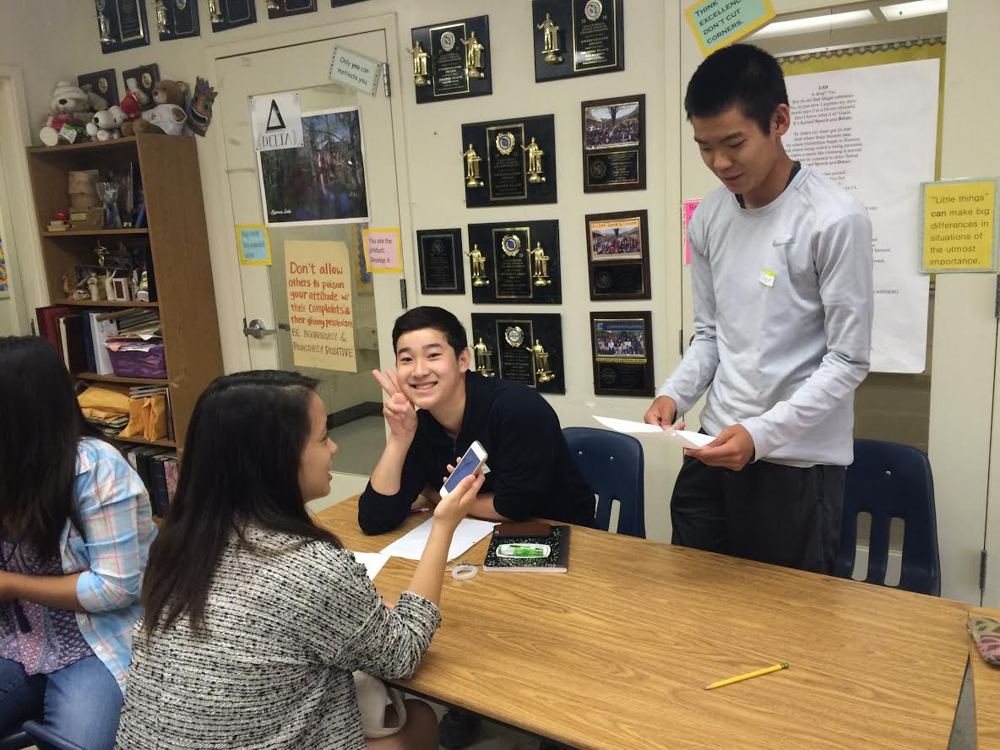

Leland Summer Debate
2016
Shanna and Celine prepare cases and blocks for debate rounds taking place the following day.
Tiffany references her flow as she gives a rebuttal speech.
Rishab after his second debate round on Friday
Ethan and Leo read background material for the debate topic (Resolved: Adolescents
ought to have the right to make autonomous medical choices).
Darren gives a practice rebuttal speech.
Christina references her notes during a practice rebuttal speech.

Tyler gives a timed rebuttal speech.
Grace presents a practice rebuttal speech.
Lauren, Qianyin, Grace, and Erica research for evidence.
Leo asks Teddi a question.
Lauren delivers a rebuttal speech.
Tyler takes notes on his flow during prep time.
Emily looks over her flows before her next speech.
Chi and Carly listen to the judge's comments after their debate round.